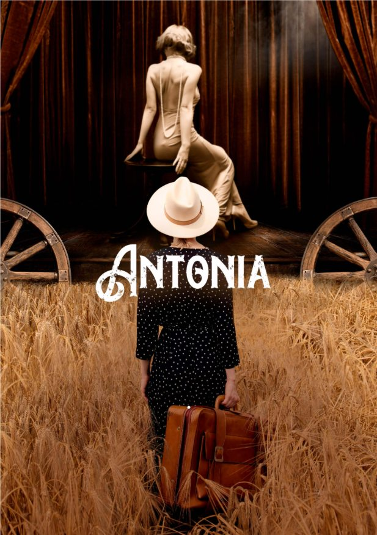

Saltar al contenido
DANI
TÉLLEZ
Filmografía
Book
Videobook
Prensa
Contacto
↗
Instagram
IMDb
Representación
Una selección de trabajos
Proyectos destacados

Cine
"Federico García Lorca"
Antonia
Ver proyecto en IMDb
↗
Televisión
"Rober"
Cuando nadie nos ve
Ver proyecto en IMDb
↗